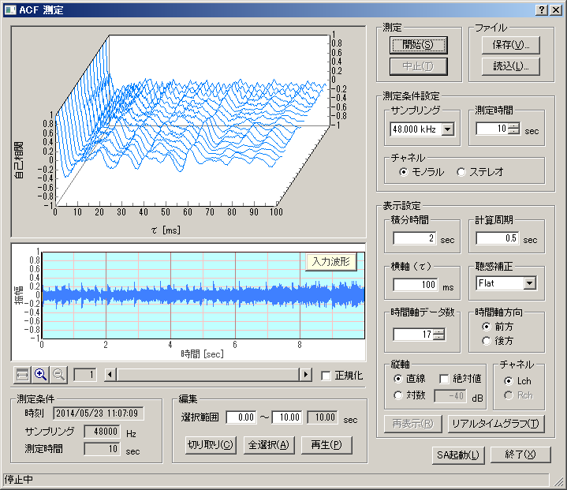

DSSF3 > RA > リファレンス > ACF/CCF測定

| 項目 | 説明 | |
|---|---|---|
| グラフ（上） | ランニングACFのグラフを表示します。縦軸は自己相関値、横軸は時間、奥行きはランニングステップです。 | |
| 測定 | [開始]ボタンで測定を開始します。測定は設定した時間が経過すると自動的に終了しますが、[中止]ボタンで中断することもできます。 | |
| ファイル |
[保存]ボタンで測定したデータをデータベースに保存します。 →7-2.ACF測定/[保存]機能 [読込]ボタンで保存されたデータを読み込んで表示します。 →7-3.ACF測定/[読込]機能 |
|
|
測定 条件 設定 |
サンプリング | A/Dコンバータのサンプリングレートを設定します。 |
| 測定時間 | 測定時間を設定します。 | |
| チャネル | モノラル測定（1チャンネル）かステレオ測定（2チャンネル）かを選択します。 | |
|
|
積分時間 | ACFの積分時間を設定します。 |
| 計算周期 | ランニングステップを設定します。 | |
| 横軸（τ） | グラフの横軸（τ）の最大値を設定します。 | |
| 聴感補正 | 聴感補正フィルタを選択します。 | |
| 時間軸データ数 | グラフの時間軸（奥行き方向）のデータ数を設定します。測定時には、測定時間、積分時間、計算周期により自動的に決定されます。 | |
| 時間軸方向 | グラフの時間軸の方向を設定します。 | |
| 縦軸 |
縦軸（自己相関値）のスケールを設定します。 直線： 自己相関値を-1から1の間でリニアスケールで表示します。 絶対値： 自己相関値の絶対値を0から1の間で表示します。 対数： 自己相関値を対数(dB)スケールで表示します。 |
|
| チャネル |
ステレオ測定をした場合に、Leftチャネルのデータを表示させたいときは「Lch」を選択し、Rightチャネルのデータを表示させたいときは「Rch」を選択します。(Leftチャネルのデータは水色で、Rightチャネルのデータはピンク色で表示されます。) モノラル測定の場合はLeftチャネルのみ表示します。 |
|
| 再表示 | 設定を変更した際に、[再表示]ボタンをクリックして、変更後の新しいデータを表示させます。 | |
|
リアルタイム グラフ |
各種グラフをリアルタイムに測定して表示します。 | |
| 入力波形 | サンプリングされた入力データの波形を表示します。 | |
| 正規化 | 入力波形の最大値を1として正規化します。 | |
| 編集 |
測定したデータから不要な部分を取り除きます。 [切り取り]ボタン：入力波形の水色で表示された部分を残して切り取ります。水色の部分はその両端の境界を左右にドラッグして変更できます。 [全選択]ボタン：全ての範囲を選択（水色の範囲に）します。 [再生]ボタン：選択された範囲をスピーカーから再生します。再生時には、再生位置が緑色の線で示されます。 |
|
| 測定条件 | 測定条件（測定時刻、サンプリング、測定時間）を表示します。 | |
| SA起動 | SA(Sound Analyzer)を起動して測定データを分析します。 | |
| 終了 | 「ACF測定」のウィンドウを閉じます。 | |
DSSF3 > RA > リファレンス > ACF/CCF測定